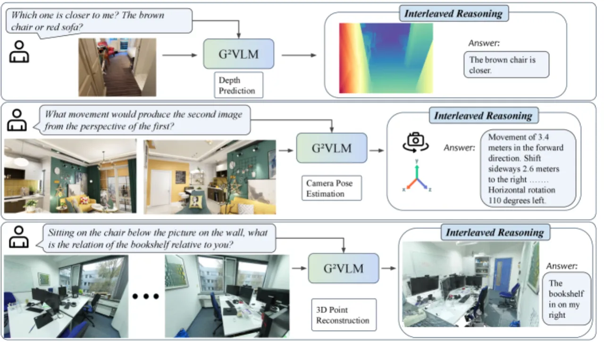
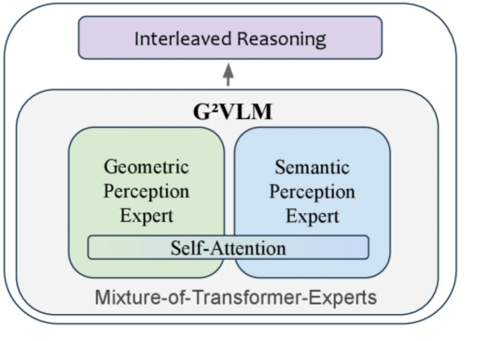
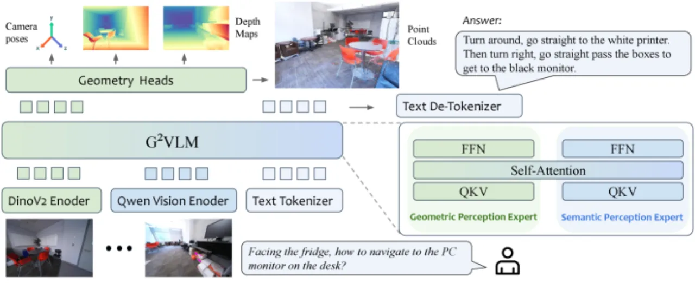
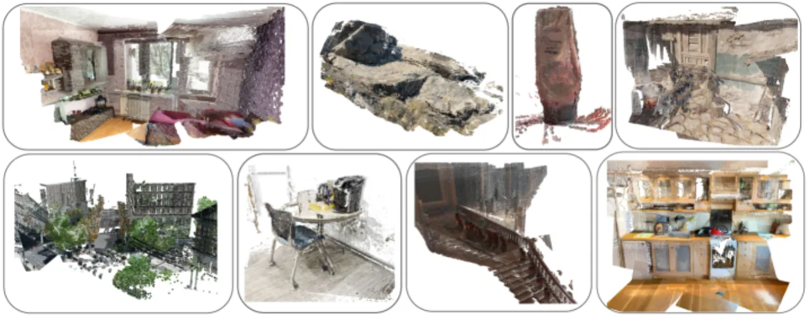
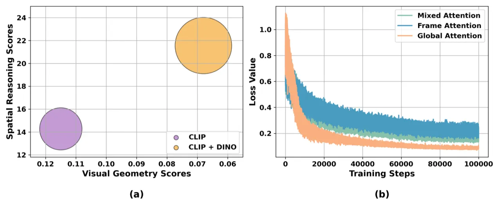
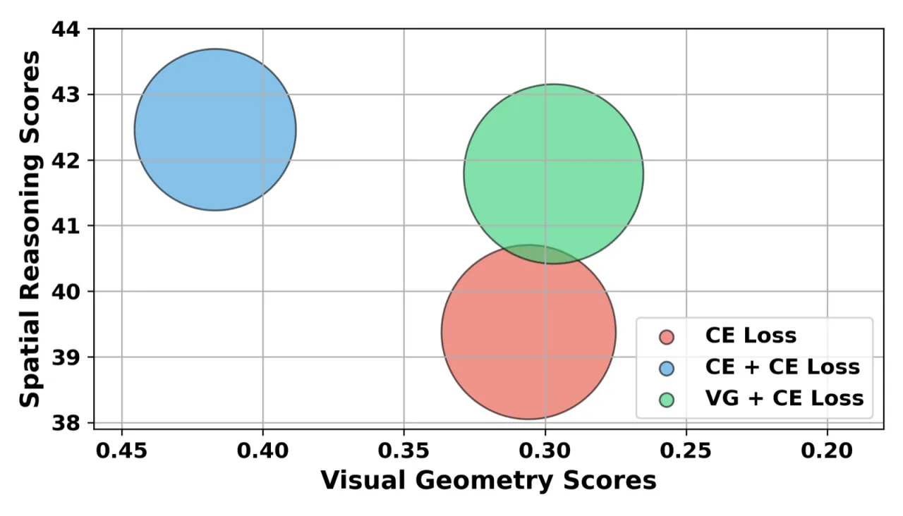

G2VLM 是首个将视觉几何重建与高层空间语义推理统一到单一模型的视觉语言系统。模型采用"双流假说"启发的 Mixture-of-Transformer-Experts 架构，在仅使用 2D 图像输入的前提下，同时实现了竞争性的 3D 点云重建、相机位姿估计，以及多个空间推理基准上的最优性能。
现有视觉语言模型（VLMs）将图像视为"扁平"的 2D 数据处理，缺乏对三维空间的几何理解能力，导致在需要 3D 空间推理的任务上表现受限。另一方面，专门的视觉几何模型虽能进行精确的 3D 重建，但不具备高层语义理解和自然语言交互能力——两类模型之间存在鸿沟。
"By unifying a semantically strong VLM with low-level 3D vision tasks, we hope G2VLM can serve as a strong baseline for the community and unlock more future applications, such as 3D scene editing."

G2VLM 以"两流假说"（two-streams hypothesis）为设计灵感，采用 Mixture-of-Transformer-Experts（MoT） 架构，将专门的几何感知专家（Geometric Perception Expert）与语义感知专家（Semantic Perception Expert）融合在同一 Transformer 主干中，通过共享的多模态自注意力层实现特征交互。

以 DINOv2 编码器为骨干，提取低层视觉信息，将图像 token 映射至 LLM hidden states，输出 3D 几何预测（相机位姿 + 点图）。使用全局注意力（Global Attention）机制，实验证明优于帧内注意力（Frame-Att.）和混合注意力（Mixed-Att.）方案。
基于预训练的 Qwen2-VL-2B 模型构建，保留其强大的多模态语言理解和指令跟随能力。以 CLIP 编码器提取语义特征，与几何专家的 DINO 特征互补——消融实验证明双编码器设计（DINO + CLIP）优于单编码器方案。

G2VLM 在两大类任务上进行评测：（1）视觉几何任务（单目深度估计、点图估计、相机位姿估计）；（2）空间理解与推理任务（SPAR-Bench、MindCube、OST-Bench、OmniSpatial）。
| 模型 | Sintel Abs Rel↓ | NYU-v2 Abs Rel↓ | ETH3D Acc.↓ | 7-Scenes Acc.↓ | Co3Dv2 RRA@30↑ |
|---|---|---|---|---|---|
| VGGT | 0.335 | 0.056 | 0.28 | 0.022 | 98.96 |
| π³ | 0.277 | 0.054 | 0.194 | 0.016 | 99.05 |
| G2VLM（本文） | 0.297 | 0.062 | 0.414 | 0.046 | 97.91 |
注：G2VLM 在视觉几何任务上的性能与专业 3D 重建模型（VGGT、π³）竞争，但在部分指标（ETH3D、7-Scenes）上略逊于专用模型——此处数据原文呈现，未作修饰。
| 模型 | SPAR-Bench Avg. | MindCube Avg. | OST-Bench Avg. | OmniSpatial Avg. |
|---|---|---|---|---|
| GPT-4o | 38.81 | 37.58 | 50.74 | 59.31 |
| Qwen2-VL-2B（base） | 24.60 | 37.83 | 26.85 | 41.18 |
| G2VLM-SR（本文） | 54.87 | 48.33 | 45.54 | 49.20 |
注：在 OST-Bench 和 OmniSpatial 上，GPT-4o 的得分（50.74 / 59.31）高于本文模型（45.54 / 49.20）——原文数据，如实呈现。G2VLM-SR 在 SPAR-Bench 和 MindCube 上以 2B 参数量超越 GPT-4o。

| 模型配置 | Low | Medium | High | Avg. |
|---|---|---|---|---|
| Qwen2-VL-2B base | 19.43 | 27.55 | 28.22 | 24.60 |
| G2VLM-SR（Frame-Att.） | 58.23 | 34.47 | 53.81 | 52.34 |
| G2VLM-SR（Mixed-Att.） | 59.16 | 35.33 | 55.16 | 53.64 |
| G2VLM-SR（Global-Att.） | 59.99 | 36.27 | 56.51 | 54.87 |


论文原文明确指出："One potential limitation is training instability with large-scale models. This challenge requires advanced optimization techniques, careful data curation, and significant computational resources." 当前实验以 Qwen2-VL-2B 为基础，更大规模模型的训练稳定性和计算成本是重要挑战。
在视觉几何任务（ETH3D：0.414 vs VGGT 的 0.28；7-Scenes：0.046 vs π³ 的 0.016）上，G2VLM 与专门的 3D 重建模型相比尚有差距。在 OST-Bench（45.54）和 OmniSpatial（49.20）上也低于 GPT-4o（50.74 / 59.31）。这表明统一架构在任务专精性上存在一定取舍。
VG + CE Loss 策略（最优方案）需要 3D 标注数据，而此类数据的获取本身存在一定难度。尽管论文指出模型通过多视角图像和视频扩展训练规模以减少对稀缺 3D 数据的依赖，但视觉几何阶段的训练仍依赖大规模 3D 标注数据集。
所有实验均基于 Qwen2-VL-2B（2B 参数）进行。大规模模型扩展的有效性、训练稳定性以及性能增益尚未在更大规模参数量（如 7B、72B）上系统验证。